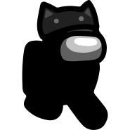

Sobre mí
Mi nombre es Joaquín Soto, comunmente conocido como Soto, soy una persona moderadamente sociable y muy habladora cuando me siento en una situación cómoda. Ayudar a que la humanidad avance a través de las herramientas que nos proporciona la tecnología es lo que más me emociona e impulsa, por lo que actualmente me encuentro estudiando la licenciatura en Ciencias de la informática en la UPIICSA.
Intereses profesionales
Desde muy pequeño he tenido dos intereses, el software y los números, más tarde se agregó otro a la lista, la filosofía, y cada vez me ha fascinado más. En mi opinión, el campo de estudio que más aplica estas tres áreas es la inteligencia artificial, derivado de esto, recientemente me comencé a sumergir en este, y aspiro a convertirme en un referente de la materia a mediano plazo.
Ocio
En el tiempo que no le dedico a la escuela disfruto de realizar diferentes actividades y de convivir con amigos, entre las principales se encuentran jugar videojuegos en multijugador, leer ficción y filosofía, ver series y películas, y muy recientemente jugar ajedrez.

Ciclismo
Probablemente la actividad que más disfruto realizar después de progresar en mi meta de vida es el ciclismo urbano, este es un deporte en el que tengo oportunidad de ejercitar mi cuerpo mientras dejo que mis pensamientos fluyan por las vertientes que deseen, donde además mis sentidos están todo el tiempo alerta para navegar por la ciudad de una manera segura.